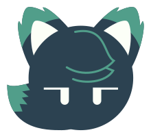

What is PatrikLani?
PatrikLani has been around since 2019, starting with video randomness and gaming on YouTube, alongside art on DeviantArt. These days, I focus on coding (mainly on GitHub) and technology. While I still draw, that's under Liophex, one of my current identities. PatrikLani is all about the tech side.

Meet Lanie!
Lanie is a wolf boy who is serious, stoic, yet calm. He can sometimes panic for no reason. He's into coding/programming and technology.